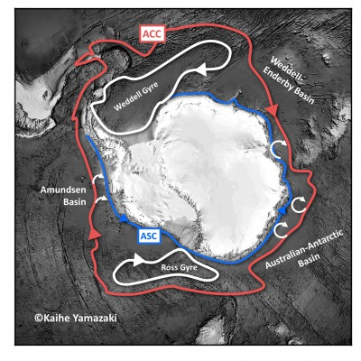
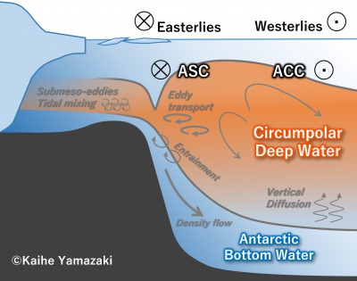

SCIENTIFIC INTERESTS
・Water mass exchange in the Antarctic continental margin
・Dynamics of the Antarctic Circumpolar Current
・Air-sea-ice interfacial process
・Climate next century
...So, why the Antarctic ocean?
Antarctic ocean drives the global ocean circulation
The Southern Ocean (or Antarctic ocean) plays a fundamental role in the global climate system, particularly in producing the densest and largest seawater on the Earth: Antarctic Bottom Water. The formation of bottom water is the dynamical driver of the global Meridional Overturning Circulation (MOC). In the Southern Ocean, surface water sinks to the abyssal layer, whereas deep water upwells close the MOC circuit, just like a hub of the global ocean. The MOC is substantial for the global redistribution of heat and carbon.

Schematic of MOC. From Descriptive Physical Oceanography 6th edition.
IPCC AR5 reported that the deep ocean has warmed over the past several decades, with the most significant warming in the Southern Ocean. This change is remarkable in the tranquil abyssal ocean; however, its cause yet to be disclosed.
Ocean circulation in the Southern Ocean.
Antarctica: the largest uncertainity in the future sea-level projection
Ice is fundamental for the climate system. The Southern Ocean is adjoining to the Antarctic ice sheet, a giant reservoir of freshwater equivalent to 60 m elevation of sea level. Trials to predict future sea-level rise are ongoing. However, there is still a significant uncertainty due to the complexity of the ice sheets response to the oceanic condition.
IPCC SROCC would be good to know our findings as a first step.
Credit: Michael Van Woert, National Oceanic and Atmospheric Association (NOAA) from NSIDC.

The Antarctic meridional overturning and the water column structure.